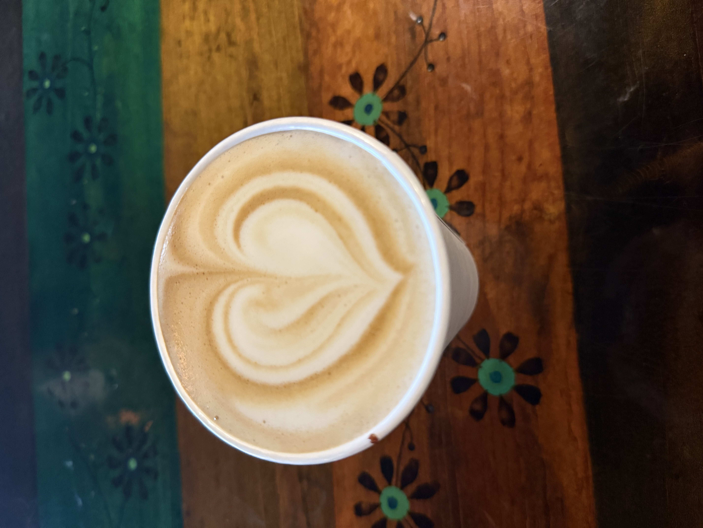
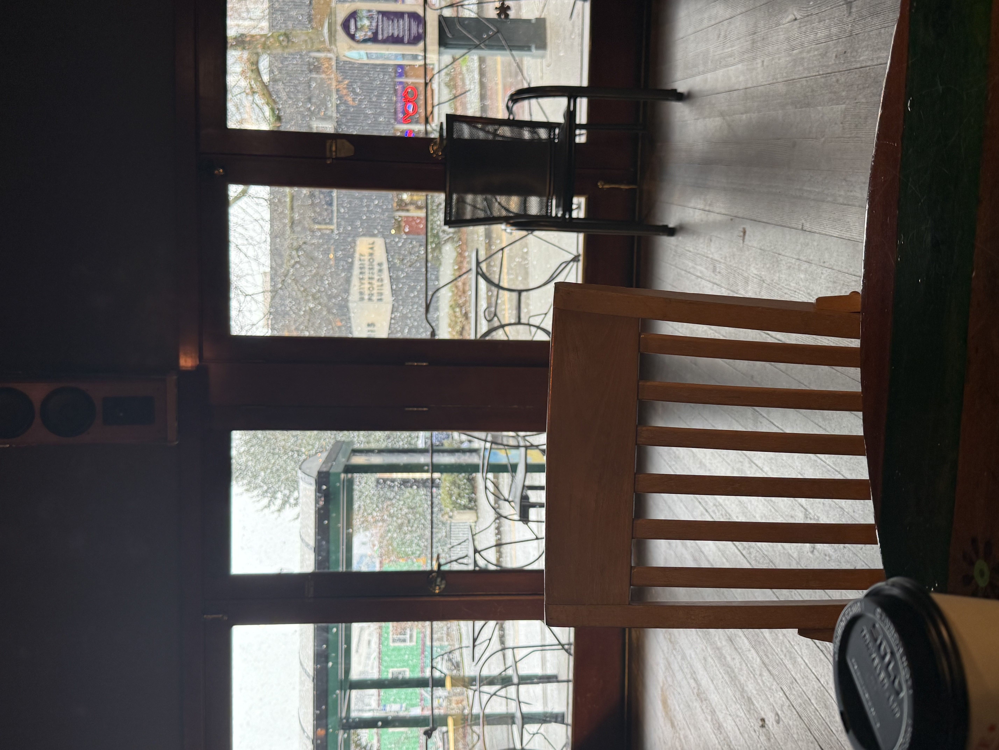

CAFE SOLSTICE
Location:
4116 University Way NE
Seattle, WA


Cafe Solstice is by no means a coffee shop that I am unfamiliar with. I visited for the first time my freshman year, which also happened to be the first time I saw snow in Seattle. My mom, sister, and grandma were in town. So, maybe it was the ambiance of drinking a hot lavender latte with my family and watching the snow come down outside, but this is my favorite coffee shop in the U-District.
My one qualm is they do not offer almond milk, but the oat milk works just fine for me. Every time I order a coffee there I have to pull my phone out to take a picture of the great latte art they put on top. Although I’ve been to Cafe Solstice many times, I have never ordered anything but their lavender latte. It’s just too good!
Ambiance
Cafe Solstice is a great spot to study with lots of available seating, and some outdoor seating which is great when the weather is nice. It can get quite busy, so if you want a good spot with outlets you might have to get there early. I enjoy the darker lighting, making it feel very cozy inside.
Price
The price is pretty standard for a coffee shop in Seattle. My order of a 16oz lavender latte with oat milk usually costs me about $7, not including a tip. I’m not mad about it.
Coffee
Honestly, no notes about their coffee. Like I’ve said, I have only ever ordered their lavender latte and it’s probably all I ever will order. It is never too sweet, just sweet enough to taste that lavender flavor. The coffee is strong, but not bitter. Overall, it is a very smooth and yummy coffee. Five stars.